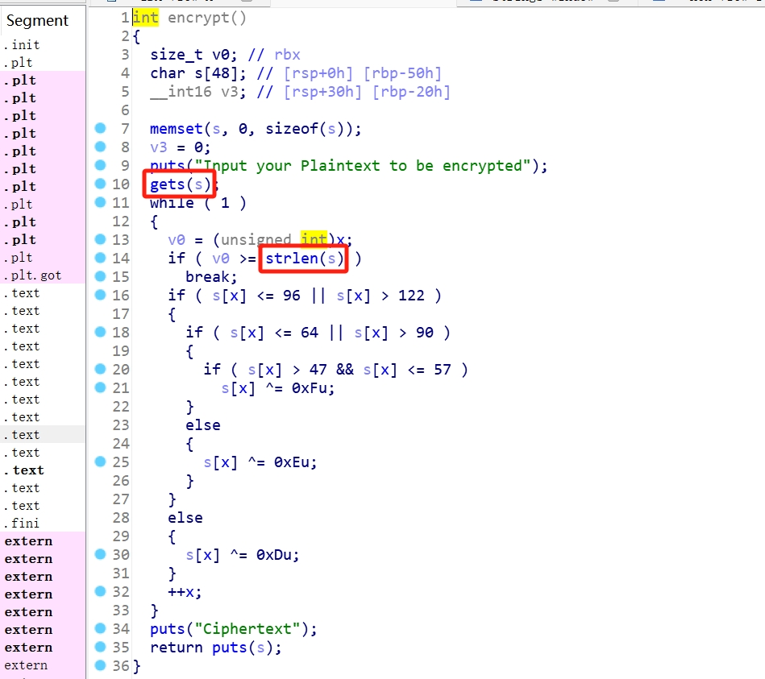

libc是C语言中的一个标准库，里面存放了像puts()、system()这样的函数，程序通过动态连接libc，便可以调用库中的函数进行使用。libc中存在got（全局偏移表）和plt（进程链接表），其中plt存放的是进入这个函数的地址，而got表中存放的是这个函数的真正地址。
程序中每次调用函数标准函数，实际上就是跳转到该函数的plt表地址，如果plt表中已经有函数地址了，就可以直接使用；如果plt表中并没有该函数的地址，那么便会通过一种映射关系跳转到got表中去查找函数的真实地址，链接并返回调用。函数在libc中的地址关系是这样的：真实地址 = libc基址 + 函数偏移量 。
ROP链
ROP(Return Oriented Programming)，即返回导向编程，在返回地址处利用gadgets构造ROP链实现函数调用。gadgets，指以ret结尾的指令序列。其中32位程序和64位程序构造ROP链时有所区别。
| 平台 | 传参方式 | 关键点 | 你的Payload顺序 |
|---|---|---|---|
| 64位 | 寄存器(rdi, rsi…) | 需要pop rdi; ret这样的Gadget | pop_rdi -> 参数 -> 函数地址 |
| 32位 | 栈 | 模拟函数调用栈布局 | 函数地址 -> 返回地址 -> 参数 |
ret2libc利用
当程序开启了NX（栈上不可执行）和RELRO（内存地址初始化随机），我们便无法利用ret2shellcode，因为即使能够跳转到shellcode地址，也无法执行shellcode。
而ret2libc，顾名思义，返回到libc函数。因为函数在libc中的偏移量是固定的，所以只要知道libc基址，便能够计算出每个函数的真实地址。一般ret2libc需要执行两次，第一次泄露地址计算shell地址，第二次getshell。
具体流程如下：
- 通过输出函数泄露某个函数的got表地址。
- 用LibcSearcher查找相应的libc版本。
- 计算libc基址和偏移量。
- 计算system()和“/bin/sh”地址。
- 构造ROP链getshell。
例题
这里以BUUCTF上的“ciscn_2019_c_1”为例。
程序分析
查看程序保护信息，得知程序是64位，且开启了NX。运行程序，可以看到程序的功能是提供文本加解密。其中选择解密没有什么特别之处，倒是选择加密会跳转到另一个函数中，跟进分析。
可以看到加密函数中存在危险输入函数gets()，并且会对v0和s的长度进行比较，如果v0的长度大于或等于s的，那么就会跳出解密过程。如果我们构造栈溢出，那么s的长度一定是大于v0的，但是strlen()函数有一个特点就是碰到“\0”也就是字符串结束符就会结束长度的计量。

翻阅段表以及字符串表，均没有发现可利用的后门函数，而栈上不可执行也就无法ret2shellcode，那么可以尝试ret2libc。程序中存在调用过的puts()函数，所以可以选择用puts()泄露puts()函数的got表地址。
查找“pop rdi; ret”和“ret”片段。

构造poc
1 | from pwn import * |
说些什么吧！